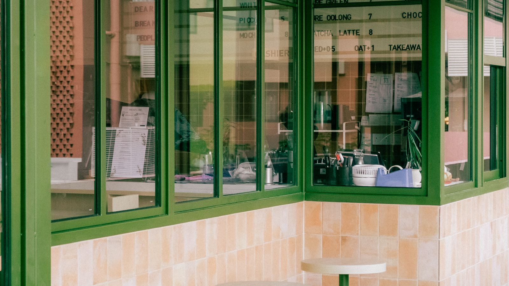

How to find us
We're the corner shopfront with the deep-green window frames, halfway down Chalk Lane, with the fig tree visible through the side gate. If you can see the takeaway menu lettered on the glass, you're in the right place.
Fig & Filter
8 Chalk Lane (corner of Weaver Street)
| Day | Hours |
|---|---|
| Monday | Closed |
| Tuesday – Friday | 7:30am – 5:00pm |
| Saturday – Sunday | 8:00am – 5:00pm |
Kitchen closes 3:30pm daily. Public holidays: check our door or email us.

We're the corner shopfront with the deep-green window frames, halfway down Chalk Lane, with the fig tree visible through the side gate. If you can see the takeaway menu lettered on the glass, you're in the right place.
The courtyard is dog-friendly; inside is not (sorry — kitchen rules). Big tables can be reserved for groups of six or more by email.